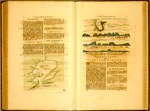

A. Roggeveen, Het eerste deel van het Brandende veen, verlichtende geheel West-Indien. ‘t Amsteldam, gesneeden, gedrukt en uytgegeven door Pieter Goos, 1675. -- (COLLBN Atlas 70)
Naast de paskaart (waarop men met de passer afstanden kan afpassen) gebruikt de zeeman bij de navigatie de leeskaart waarin beschrijvingen zijn opgenomen zowel van kusten, vaargeulen, havens en ondiepten als van afstanden en koersen. Dergelijke zeemansgidsen werden in de Oudheid al door de Grieken samengesteld onder de titel Periplus. In de zestiende eeuw komen we ze als ‘portolanos’ bij de zeelieden uit Genua en Venetië tegen. Ook in Noordwest-Europa ging men er in de vijftiende eeuw toe over om de ervaringen en kennis die men generaties achtereen in de praktijk van het navigeren had opgedaan op schrift te zetten Zo ontstonden verzamelingen van notities over de koersen langs de kusten, de afstanden tussen en het binnenvaren van de havens, waaraan zo nu en dan ook kleine schetsjes van herkenningspunten op de kusten zoals kapen en hoge heuvels werden opgenomen.
Uit omstreeks 1450 dateren twee exemplaren van het Seebuch, de oudst bewaarde leeskaart van het zeegebied waar de Nederlandse handel actief was: de Noord- en de Oostzee. Ongeveer een eeuw later, in 1544/5, nam Cornelis Anthonisz uit Amsterdam in zijn gedrukte leeskaart, getiteld Die caerte van die Oosterse See, door hemzelf in sublieme stijl in hout gesneden landverkenningen op, die de gehele kustlijn van Vlaanderen tot de Baltische Staten laten zien. De oudst bewaarde uitgave van dit zeegidsje dateert van 1558. Hij introduceerde daarmee de kustprofielen als een vast gegeven van de zeemansgids of leeskaart in de Nederlanden.
Een volgende stap werd gezet door Lucas Jansz Waghenaer, die in 1584 de eerste zeeatlas, de Spieghel der zeevaerdt, uitgaf, met daarin landverkenningen en zeilaanwijzingen. Deze combinatie van pas- en leeskaarten in één en dezelfde uitgave zou sindsdien de zeeatlas blijven kenmerken, zoals ook het Brandende veen van Arent Roggeveen, leermeester in de zeevaartkunde van de stuurlieden van de West- en Oost-Indische Compagnieën te Middelburg. In de opdracht aan Willem III heeft hij uiteengezet wat het belang van zijn atlas was: ‘Ick hebbe dan begonnen van de Canary Eylanden, daer alle andere Zee-boecken eyndigen: soo voortgaende tot Cabo de Bona Esperança; alsmede de gantsche kust van America tot Rio Amazones’, waarmee hij wilde zeggen dat zijn atlas de eerste gedrukte zeegids van niet-Europese kusten was. We mogen aannemen dat hij voor de inhoud rijkelijk gebruik gemaakt heeft van Spaanse en Portugese cartografische bronnen, uit de archieven van de West-Indische Compagnie in Middelburg. De vele Spaanse benamingen op zijn kaarten wijzen daarop.
De hier getoonde opening laat treffend zien hoe functioneel -- uit het oogpunt van navigatie -- het samenvoegen van schetskaart, landverkenningen en zeilaanwijzingen kan zijn. Maar tevens doet het ons beseffen dat de kaart-als-instrument slechts één bepaald doel dient en de geografische werkelijkheid reduceert tot die gegevens die alleen voor dat doel van belang kunnen zijn.
Literatuur
- C. Koeman, Atlantes neerlandici. Bibliography of terrestrial, maritime and celestial atlases and pilot books, published in The Netherlands. Amsterdam [etc.] 1967-1986. 6 dln, dl. 4, Rog 1.
- C. Koeman, ‘Introduction’, in: Arent Roggeveen [and] Pieter Goos, The burning fan. First pt. Amsterdam 1971.
- D. Howse and M. Sanderson, The sea chart. A historical survey based on the collections in the National Maritime Museum. Newton Abbot 1973.
- C. Koeman, Geschiedenis van de kartografie van Nederland. Zes eeuwen land- en zeekaarten en stadsplattegronden. Alphen aan den Rijn 1983, p. 203-224.
- Lucas Jansz. Waghenaer van Enckhuijsen. De maritieme cartografie in de Nederlanden in de zestiende en het begin van de zeventiende eeuw. Enkhuizen 1984.
- A.W. Lang, Die "Caerte van Oostlant" des Cornelis Anthonisz. 1543. Die älteste gedruckte Seekarte Nordeuropas und ihre Segelanweisung. Bremerhaven 1986.
| vorige pagina | top pagina |